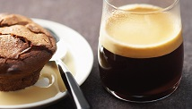
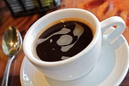
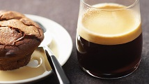
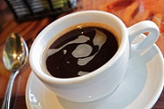

Кофе Лунго
250 мл
Стоимость:
170
руб.
Лунго – это чёрный кофе, приготовленный с помощью кофемашины или рожковой кофеварки. Согласно рецепту, используется столько же кофе, как и для эспрессо, но, в зависимости от способа приготовления, порция лунго больше стандартной порции эспрессо в 2–4 раза.
Кофе лунго – изобретение XX века, появившееся на свет благодаря экспериментам с кофемашиной. Само слово lungo в переводе с итальянского означает «длинный», что как нельзя лучше описывает особенности приготовления напитка.
Эспрессо в качестве утреннего кофе прекрасен, но не всем хватает 30 мл напитка для того, чтобы нормально позавтракать. Можно приготовить двойную или даже тройную порцию эспрессо, но на это уйдёт в 2–3 раза больше молотого кофе, а итальянцы в тяжёлые послевоенные времена испытывали финансовые трудности и не могли себе этого позволить.
 



Существует два способа приготовления кофе лунго, и любители кофе всего мира спорят, какой из них более правильный:
1. Увеличение порции примерно в 2 раза за счёт использования кофе крупного помола. Время приготовления – такое же, как и у эспрессо;
2. Увеличение порции кофе в 2–4 раза за счёт удлинения срока экстракции напитка.
Лунго принято подавать в толстостенной чашке, вместе с бокалом негазированной воды комнатной температуры, сахаром или мёдом. Вода нужна для того, чтобы освежить рецепторы перед употреблением кофе и запить его, если напиток покажется слишком горьким. Хорошо сочетается с шоколадом, выпечкой, десертами, фруктами, твёрдым сыром.
Итальянцы пьют лунго только один раз в день и лишь до 11 утра. Кофе бодрит, помогает проснуться, но если его выпить позже – возможно перевозбуждение, повышенная нервозность, бессонница.
Даже здоровому человеку лучше употреблять такой напиток не каждый день, а 4–5 раз в неделю. Людям с болезнями сердечно-сосудистой системы следует вообще отказаться от лунго, заменив его кофейными напитками с меньшим содержанием кофеина.
Обратно в меню
Стоимость:
170
руб.
1. Увеличение порции примерно в 2 раза за счёт использования кофе крупного помола. Время приготовления – такое же, как и у эспрессо;
2. Увеличение порции кофе в 2–4 раза за счёт удлинения срока экстракции напитка.
Даже здоровому человеку лучше употреблять такой напиток не каждый день, а 4–5 раз в неделю. Людям с болезнями сердечно-сосудистой системы следует вообще отказаться от лунго, заменив его кофейными напитками с меньшим содержанием кофеина.